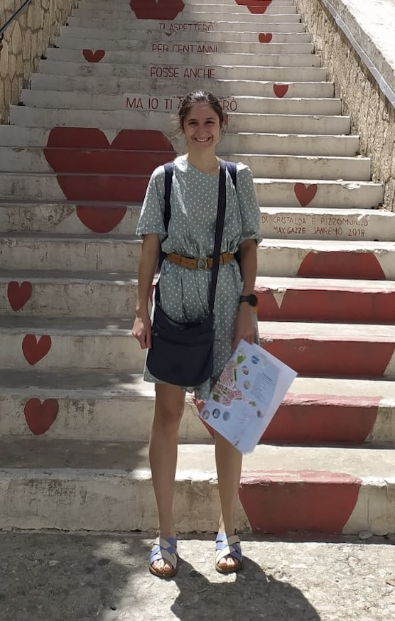

Lydia Giacomin
I am a postdoctoral research associate currently working at King's College London with Yan Fyodorov.
In November 2025, I defended my PhD on the topic of many-body localization and, more generally, properties of energy transport in disordered systems. My PhD was conducted under the supervision of François Huveneers.
My research interests include random matrix theory, complex systems and high-dimensional probability.
My CV can be found here.

Papers
Absence of Normal Heat Conduction in Strongly Disordered Interacting Quantum Chains
with Wojciech De Roeck, François Huveneers and Oskar Prosniak
Arxiv preprint here
Sub-Power Law Decay of the Wave Packet Maximum in Disordered Anharmonic Chains
with Wojciech De Roeck, Amirali Hannani and François Huveneers
Arxiv preprint here
Ongoing research topics
Super-symmetric approach to the distribution of Ginibre left and right eigenvectors
with Yan Fyodorov
Renormalization group approach to localization in interacting quantum chains
with Wojciech De Roech, Amirali Hannani and François Huveneers
Talks
2025
Young Researchers' Seminar: December 18th, 2025, Université Paris Dauphine
Mathematical Physics Seminar: December 5th, 2025, University of Bristol
PhD Students' Day: April 8th, 2025, Université Paris Dauphine
2023
Young Researchers' Days seminar: June 2nd, 2023, Université Paris Dauphine
Teaching
2024-2025
Poisson proccesses, Teaching Assistant: Master's course at Université Paris Dauphine.
Rendez-Vous des Jeunes Mathématiciennes: Event for high school girls with an interest in mathematics. Mini-workshop supervisor.
2023-2024
Poisson proccesses, Teaching Assistant.
Probability II, Teaching Assistant: Bachelor's course at Université Paris Dauphine.
2023-2024
Poisson proccesses, Teaching Assistant.
Probability II, Teaching Assistant.
Probability II, Numerical Simulations: Bachelor's level practical sessions at Université Paris Dauphine.